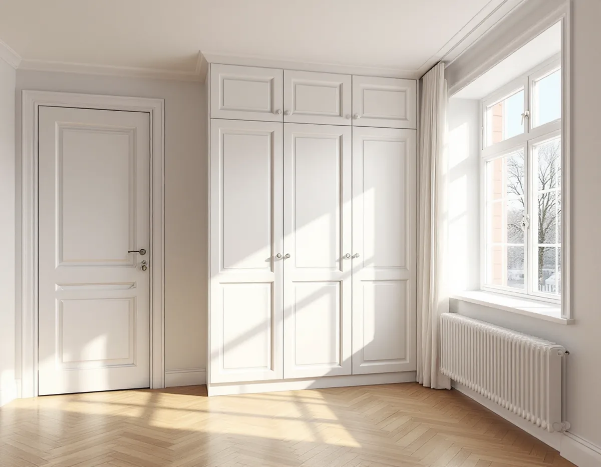
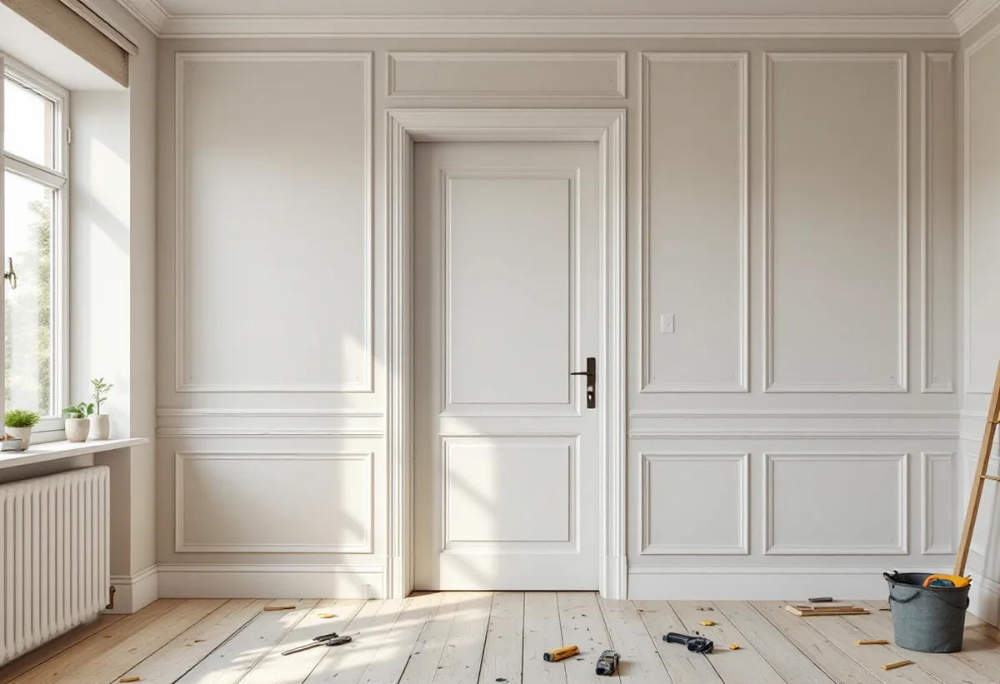

Vem godkänner?
Vi reder ut om arbetet behöver föreningens tillstånd, en anmälan till staden eller bygglov – eller inget av dem.

De flesta snickeriuppdrag i Solna görs i lägenheter: en ny innervägg, en lägenhetsdörr, platsbyggd förvaring eller en balkong som ska glasas in.
Beskriv jobbet kort.
Något blev fel. Kontrollera uppgifterna eller ring 08 12 410 276.
Vi tittar på jobbet på plats innan du får offert.
Du ser vad som ingår och vad det kostar.
Vi drar av ROT direkt och sköter ansökan.
Geal Entreprenad AB, Bromma. Org.nr 559303-7566.

Hos villa- och radhusägare gäller det oftare altan, förråd eller tillbyggnad, i en stad där stora delar räknas som kulturhistoriskt värdefulla. Vi reder ut vem som ska godkänna arbetet innan det planeras.
Solna stad beskriver en kulturhistoria som präglas av mångfald och kontraster, och på stadens sida om kulturmiljöer i Solna räknas 35 sammanhängande kulturhistoriskt värdefulla miljöer upp. Bland bostadsområdena finns Vasalund, Gamla Hagalund, Brahelund, 1950-talshusen vid Förvaltarvägen och i kvarteren Fjorden och Nordan, och arbetarbostäderna vid Ulriksdals station, som kallas Rödingarna.
Staden skriver att byggnader med jämna mellanrum behöver anpassas till nya behov och att det då är viktigt att ta hänsyn till husens ursprungliga karaktär, så att deras historiska värde inte går förlorat. Bland de enskilda byggnadsminnena finns radhus i kvarteret Fyrväpplingen.
För en snickare innebär det att samma sorts uppdrag kan hanteras helt olika. En ny vägg i en 50-talslägenhet i Huvudsta är i första hand en fråga för föreningen, medan ett förråd vid ett radhus i en utpekad miljö kan kräva bygglov.
Solna stads sida för lägenhetsinnehavare är kortfattad: som boende i bostadsrätt behöver du fastighetsägarens medgivande för byggåtgärder, alltså föreningens. Att riva en vägg kräver föreningens godkännande men inte bygglov. Är väggen bärande krävs dessutom en anmälan om ändring av bärande konstruktion, en process som staden beskriver som lik en bygglovsansökan.
I 7 kap. 7 § bostadsrättslagen räknas de åtgärder upp som kräver styrelsens tillstånd. En av dem är det som påverkar brandskyddet, och den som byter lägenhetsdörren mot trapphuset bör därför stämma av med styrelsen innan dörren beställs. Staden påpekar på sin villaägarsida att flera ändringar kan påverka brandskyddet och att en sakkunnig brandkonsult kan hjälpa till att bedöma dem.
Har lägenheten särskilda kulturhistoriska värden krävs tillstånd för varje åtgärd som påverkar dem. Styrelsen får säga nej bara om åtgärden är till påtaglig skada eller olägenhet för föreningen, och ett tillstånd kan förenas med villkor.
Enligt Solna stad kräver inglasning av balkong bygglov för fasadändring. På vissa platser är det inte tillåtet alls, antingen på grund av byggnadens kulturvärden eller på grund av detaljplanen. Om man också vill bygga ett skärmtak över balkongen räknas det som en tillbyggnad, och det är enligt staden ofta inte tillåtet.
Balkongen hör till huset, och därför är det föreningen som fastighetsägare som ska stå bakom ansökan. Staden råder den som beställer att ställa krav på att leverantören bygger enligt bygglovet, följer kontrollplanen och dokumenterar bygget, och att begära slutbesked när allt är klart.
Ekonomiskt skiljer sig balkongen från resten av lägenheten. Skatteverket ger inget rotavdrag för att bygga, reparera eller glasa in en balkong i en bostadsrätt, medan arbete inne i lägenheten ger det.
På sidan om bygglovsfria åtgärder skriver staden att undantagen från bygglov i många fall inte kan tillämpas i Solna, eftersom stora delar av staden är kulturhistoriskt värdefulla. På villaägarsidan står att friggebodar inte längre får byggas utan bygglov i stora delar av Solna, och att de vanligaste skälen är särskilt värdefulla kulturmiljöer och riksintressen. Områdena syns i Solnakartan.
Där undantagen gäller, inom detaljplan, finns en gemensam pott på 45 kvadratmeter byggnadsarea för lovfria komplementbyggnader och komplementbostadshus. En enskild byggnad får vara högst 30 kvadratmeter, inte större än huset den kompletterar och högst 4 meter till nock. För tillbyggnader finns en egen pott på 30 kvadratmeter, och tidigare friggebodar, attefallshus och skärmtak räknas in.
Staden räknar också upp lägen där lov krävs: närmare tomtgräns än 4,5 meter utan grannens skriftliga medgivande, närmare än 30 meter från ett järnvägsspårs mitt och vid riksintressen för totalförsvaret. Ligger tomten inom strandskydd kan även dispens behövas.
Inne i lägenheten är platsbyggd förvaring det vanligaste önskemålet: garderober i en hall, bokhyllor runt en dörr eller skåp i en nisch. Vi anpassar luckor, lister och foder till lägenhetens ålder, så att det nya ser ut att höra till. En ny lätt vägg byggs med reglar, ljudisolering och skivor och får en dörr som passar resten av lägenheten.
Ska köket göras om samtidigt samordnar vi snickeriet med köksrenoveringen i Solna, så att föreningen får ett samlat underlag och arbetet kan planeras i en följd.
Vi reder ut om arbetet behöver föreningens tillstånd, en anmälan till staden eller bygglov – eller inget av dem.
Vid besöket mäter vi rum, dörröppningar och nischer och letar efter tecken på bärande väggar.
Du får ritning och beskrivning att lämna till styrelsen och, när det behövs, underlag för anmälan.
Dörrar, skivor och virke beställs i storlekar som går in genom porten och upp i trapphuset.
Väggar, dörrar och förvaring byggs med skyddat trapphus och efter föreningens tider för bullrande arbete.
Vi går igenom arbetet med dig och lämnar dokumentation som kan sparas eller lämnas till föreningen.
I en bostadsrätt räknar Skatteverket bara arbete inne i lägenheten. Att byta innerdörrar, riva innerväggar och bygga om planlösningen eller montera platsbyggda garderober ger avdrag. Att byta själva ytterdörren gör det inte, men arbete på dörrens insida gör det. Balkong och inglasning ligger utanför.
Avdraget motsvarar 30 procent av arbetskostnaden inklusive moms. Per person och år kan rot ge högst 50 000 kr, inom ett gemensamt tak på 75 000 kr för rot och rut. Material och resor räknas inte in. Vi drar av beloppet på vår faktura.
I en lägenhet påverkas priset mest av om något bärande berörs, vilka dörrar och skivor som behövs och hur lätt det är att få upp material i huset. Vid ett radhus spelar marken och en eventuell lovansökan in. Efter ett kostnadsfritt besök får du ett skriftligt kostnadsförslag.
Altan, väggar, dörrar och inredning.
Snickare i Stockholm →Takbyte, takbesiktning och plåtarbeten.
Takläggare i Solna →Råsunda, Stocksundstorp och Råsta.
Takrenovering i Solna →Snickerier, kulör och bygglov.
Målare i Solna →Kök i bostadsrätt och villa.
Köksrenovering i Solna →Badrum vid stambyte och i villa.
Badrumsrenovering i Solna →Nya golv och slipning.
Golvläggare i Solna →Kulturmiljöerna, kartan och lovet.
Attefallshus i Solna →Ritningar, kontrollplan och slutbesked.
Byggföretag i Solna →Radhusen, föreningen och lovet.
Fasadmålning i Solna →Putsade villor och krav på material.
Fasadrenovering i Solna →Råsunda, bygglovet och handlingarna.
Fönsterbyte i Solna →Fönster från 1950-talet, kitt och fogar.
Fönsterrenovering i Solna →Ta fram och slipa trägolvet under mattan.
Golvslipning i Solna →Plåt i Solnas kulturmiljöer.
Plåtslagare i Solna →Gatusidan, gårdssidan och konstruktionen.
Takbyte i Solna →Tapet efter husets ålder och underlag.
Tapetsering i Solna →Kulturmiljöerna och lovet.
Tillbyggnad i Solna →Hela lägenheten, elen inräknad.
Totalrenovering i Solna →Eller ring 08 12 410 276, mån–fre 08–17.
Beskriv jobbet kort.
Något blev fel. Kontrollera uppgifterna eller ring 08 12 410 276.